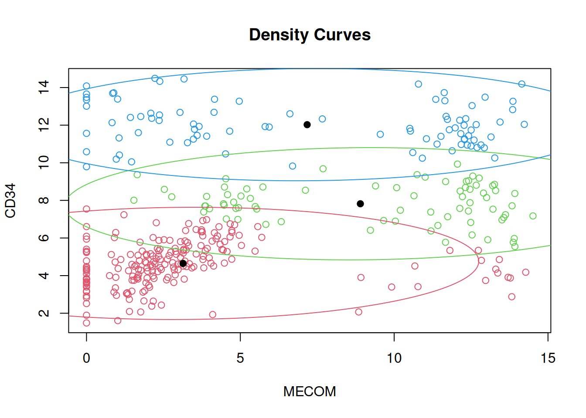
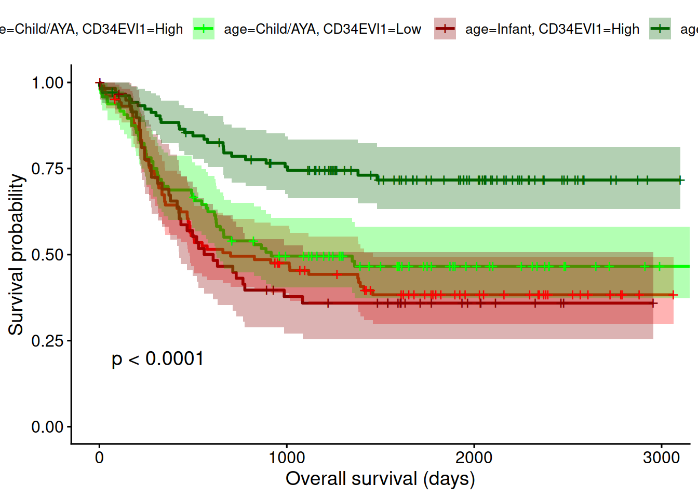
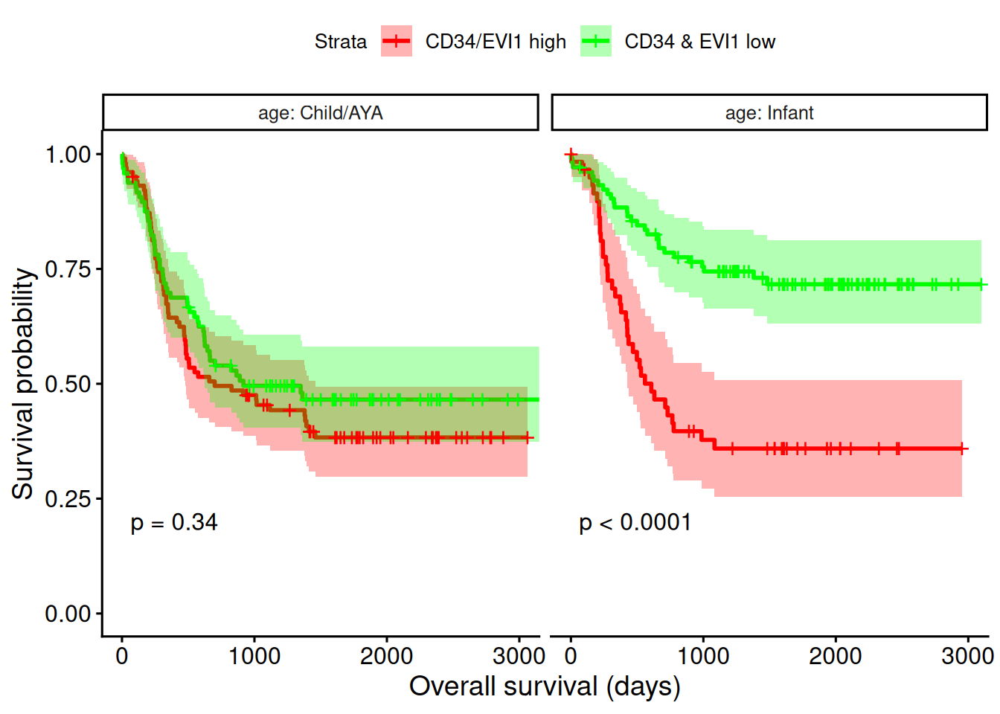

Code
# available in the bifurcatoR package or from COG/TARGET clinical data elements
MLL <- read.csv(url("https://trichelab.github.io/data/MLL.csv"), row=1)Translocations involving human chromosome 11 are a frequent occurrence in infant leukemia. When the breakpoint is on band 23 of the long arm of chromosome 11, or more concisely, when we see an 11q23 abnormality, we usually suspect that the Mixed-Lineage-Leukemia or MLL protein (encoded by the KMT2A gene) has been broken in half and stuck to some other gene. Unfortunately, “some other gene” can be one of hundreds of known partner genes, and nobody is sure how much the identity of the partner gene matters. What is certain is that 11q23 aberrations are associated with very aggressive leukemic transformation, causing over half of the cases seen in infants. Given the difficulty of drawing up rules for all the different MLL fusions that can arise in a patient, we might wonder if there are other markers that could tell us whether a patient will do well on any of several possible therapies. MLL-rearranged leukemia occurs across all ages, but younger patients have very few additional mutations, so we would expect them to harbor the fewest confounding mutations (and, generally speaking, that’s true).
As part of the COG/TARGET AML project, over 500 infant (younger than 3 years) patients with acute myeloid leukemia (AML) have been characterized by DNA and RNA sequencing, flow cytometry, and DNA methylation microarrays, some at both diagnosis and relapse. 164 of these infant patients harbor MLL translocations, in addition to 142 children and 56 adolescent and young adult (AYA) patients, for a total of 362 well-characterized, MLL-rearranged pediatric AML cases.
# available in the bifurcatoR package or from COG/TARGET clinical data elements
MLL <- read.csv(url("https://trichelab.github.io/data/MLL.csv"), row=1)(More on this topic: Modeling phenotypes with mixtures)
Previous work has shown that the cell surface marker CD34 and the stem cell fate determining gene MECOM, which encodes the EVI1 protein, associate with poor prognosis, at least in MLL-rearranged AML and in B-cell ALL patients. Prior to TARGET, there wasn’t really a well-annotated, readily-available cohort of MLL-rearranged AML patients who had this sort of extensive characterization across multiple age groups. But time marches on, so now there is.
library(mixtools)
# library(mclust)
# bothFit <- Mclust(MLL[, c("MECOM", "CD34")])
bothFit <- mvnormalmixEM(MLL[, c("MECOM", "CD34")], k=3, arbvar=FALSE)number of iterations= 48 # could be better, but at least it's fast-ish; takes about 4 seconds
plot.mixEM(bothFit, whichplots=2, xlab2="MECOM", ylab2="CD34")
# ok
MLL$classification <- apply(bothFit$posterior, 1, which.max)
MLL$age <- ifelse(MLL$AgeGroup == "Infant", "Infant", "Child/AYA")
subset.mixEM <- function(x, i=seq_len(nrow(x))) {
x$x <- x$x[i, ]
x$posterior <- x$posterior[i, ]
return(x)
}
if (FALSE) {
# this throws a plot error, so skip it for now
par(mfrow=c(1,2))
plot(subset(bothFit, MLL$infant == "Infant"), whichplot=2, xlab2="MECOM",
ylab2="CD34", density=TRUE, alpha=c(0.0005, 0.005, 0.05), main2="Infants")
plot(subset(bothFit, MLL$infant != "Infant"), whichplot=2, xlab2="MECOM",
ylab2="CD34", density=TRUE, alpha=c(0.0005, 0.005, 0.05), main2="Kids/AYA")
par(mfrow=c(1,1))
}Let’s see how these labels predict outcome (or don’t).
# bothFit$mu # cluster 1 is low/low
MLL$CD34EVI1 <- ifelse(MLL$classification == 1, "Low", "High")
library(survival)
library(survminer)
allSurv <- survfit(Surv(OS, OSI) ~ age + CD34EVI1, data=MLL)
ggsurvplot(allSurv, conf.int=TRUE, pval=TRUE, xlab="Overall survival (days)",
tables.theme = theme_cleantable(),
palette=c("red","green","darkred","darkgreen"))
# by age group
ggsurvplot_facet(allSurv,
data=MLL,
conf.int=TRUE,
pval=TRUE,
legend.labs=c("CD34/EVI1 high", "CD34 & EVI1 low"),
xlab="Overall survival (days)",
palette=c("red","green"),
facet.by="age")
For the sake of downstream motif analysis, let’s tabulate which cases are which:
infantMLL <- subset(MLL, age == "Infant")
# write.csv(infantMLL, file="~/Dropbox/Alex_Projects/infantMLL.csv")